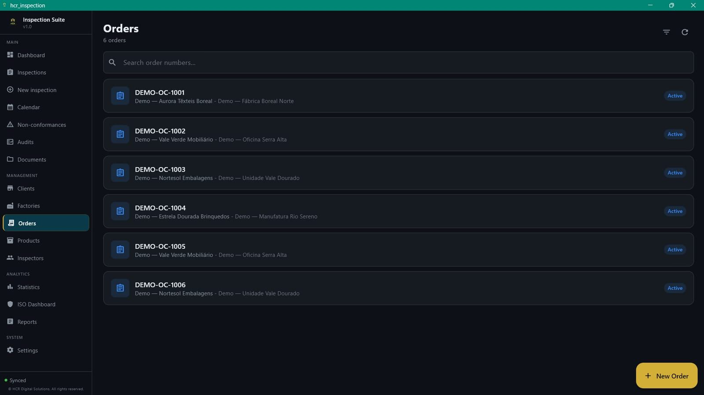

AQL sampling inspections
Set the lot and the acceptable quality level, then run the inspection with a wizard, from start to decision.
From sampling plan to final report: HCR Inspection Suite brings AQL inspections, defects, photos in the PDF report, non-conformities and corrective actions (CAPA) into one platform: a Windows app that works offline and a web version (SaaS) in the browser, including on mobile.
Access is by invitation during the launch. We usually reply within 1 to 2 working days.

From an AQL inspection to a PDF report ready to send: AQL assistant, defects, non-conformities with corrective actions (CAPA), calendar and statistics.
The video loads from YouTube only when you press play. The narration is in Portuguese with English subtitles. Watch on YouTube (subtitles in EN, FR, ES and Chinese).
A few screens of HCR Inspection Suite, with demo data.
Set the lot and the acceptable quality level, then run the inspection with a wizard, from start to decision.
Attach photos to the inspection, by product and section, and see them in the PDF report, with no manual pasting of images. In the phone browser you take the photo on the spot; in the Windows app you pick it from the gallery or your files.
Generate PDF reports for the client or the factory, ready to send, without redoing the work in Excel or Word.
Open non-conformities and follow corrective actions through to closure, in the same place as the inspection.
Plan inspections in the calendar (with optional Google Calendar or Outlook sync) and follow the results.
Work on the factory floor or in the warehouse, even with no network. Data syncs when the connection is back.
The inspections, non-conformities and corrective actions (CAPA) you record in the app stay documented and traceable, which helps keep evidence for internal and external audits in an ISO 9001 quality management system. HCR Inspection Suite is not a certified management system and does not replace your company's certification: it is the tool that organises the inspection work.
For quality managers, inspectors and QC teams who run inspections in the field and then have to close the report: factories, suppliers, importers and inspection companies.
HCR Inspection Suite is a product of HCR Digital Solutions, a Portuguese software startup (micro-company) based in Santa Maria da Feira. It was created by Hugo Resende, a Quality Manager, for people who run inspections and then have to close the report. We are small, we talk directly to the people who use the app, and we improve the product with early users' feedback.
AQL (Acceptable Quality Limit) is the sampling criterion used to decide, from a sample of the lot, whether the lot is accepted or rejected, without inspecting every piece.
Yes. The Windows app keeps a local copy of the data needed for your work and syncs with the server when a connection is available. The web version needs an internet connection.
Portuguese, English and French.
Email HCRFinanceMaster@gmail.com. During the launch, access is by invitation.
Connections use HTTPS, passwords are stored only as hashes and each organisation's data is isolated at database level. The details, including where data is processed, are in the privacy policy.
There are no public prices yet. During the launch, access is by invitation: request access and tell us how many users and inspections you have, and we will reply with terms.
There are no ERP integrations yet. HCR Digital Solutions also builds custom software and integrations, so if you need one, talk to us.
The native app is Windows-only. There is also a web version (SaaS) that runs in the browser, including on mobile, with no installation. There are no native Mac, Android or iOS apps.
It helps you record and trace inspections, non-conformities and corrective actions, which are typical records of an ISO 9001 system. It is not a certification or a complete management system.